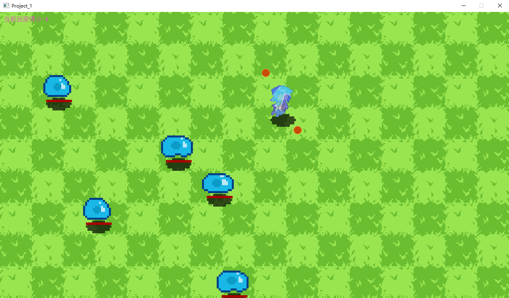

割草类型游戏
你可以点击以下链接查看与下载相关资源：
学习过程Markdown笔记文件：笔记文件（note.md）
项目源码可在GitHub仓库查看与下载：项目地址（github）
简介
这是跟随视频BV1eM4m1S74K基于C++语言使用简单EasyX图形库开发的2D平面像素割草游戏，总计代码行数922行。
游戏包含简单的资源加载、开始界面、局内循环、碰撞检测和结束逻辑，通过以上简单学习游戏运行流程与C++特性和优势。
玩家可以通过方向键控制角色上下左右以及斜角移动，玩家周围存在一圈围绕自身旋转子弹，敌人由场外生成并不断靠近玩家，子弹撞击敌人将其击杀或玩家主动按下E键冰冻自身均可增加得分，此处无图形资源而是通过自行编写代码完成了冰冻后高光冰面处的反光特效渲染，得分的增加将升级子弹个数，敌人首次撞击玩家将触发玩家闪烁与一定时长无敌帧，第二次撞击将触发游戏结束。
项目相关截图：

简陋的开始与退出界面按钮

游戏局内角色和敌人

失败结束显示游戏结束提示

得分升级子弹个数提升
扩展E键冰冻自身以获得更多得分
技术栈与特点
开发语言与技术栈：
- C++ 100.0% —— 整个项目的代码均使用C++编写，利用了C++丰富的特性，如面向对象编程的类、继承和多态，以及标准库中的容器和算法，提升了代码的可维护性和复用性。
- 图形库：使用EasyX图形库实现游戏界面的绘制和图像显示。如`loadimage`函数用于加载图片，`putimage`函数用于将图片绘制到指定位置，`AlphaBlend`函数实现透明图像的绘制。
- 多媒体库：Windows Multimedia API（Winmm.lib），通过 `#pragma comment(lib, "Winmm.lib")` 引入库，使用 `mciSendString` 函数实现游戏中的音频播放功能，包括背景音乐和打击音效等。
- 标准库：C++ STL使用`std::vector`容器来存储游戏对象，如敌人和子弹，方便进行动态管理和操作。
- 内存管理：动态内存分配（`new`，`delete`关键字）在项目中动态分配内存，如在`Atlas`类中为`IMAGE`对象分配内存，同时在析构函数中使用`delete`释放内存，确保资源的合理使用，避免内存泄漏。
- 事件处理：Windows消息机制，通过`peekmessage`函数获取Windows消息，根据不同的消息类型（如鼠标事件`WM_MOUSEMOVE`、`WM_LBUTTONDOWN`、`WM_LBUTTONUP`和键盘事件`WM_KEYDOWN`、`WM_KEYUP`）处理用户输入，实现交互逻辑。
项目特点：
- 初学阶段且为小型项目所以将所有代码放在main中，后面的项目将分文件编写
- 使用面向对象设计，简单将游戏元素抽象为独立类以提高代码可维护性
- 使用包含游戏循环、输入处理、渲染系统等核心组件，使用动态演示稳定帧率
- 适合学习C++游戏开发的基础流程与调试技巧的项目